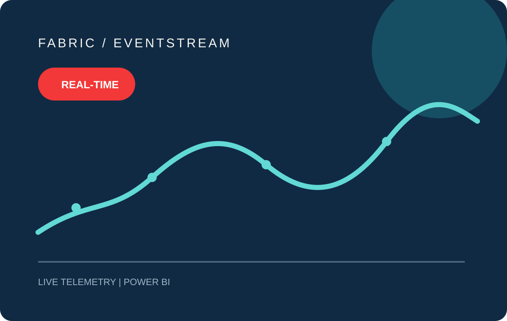
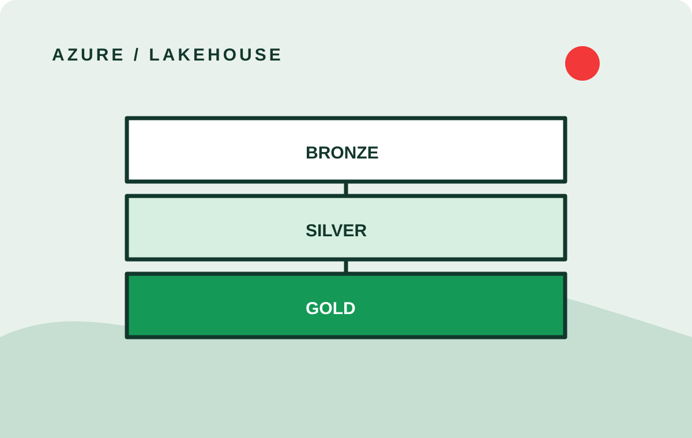
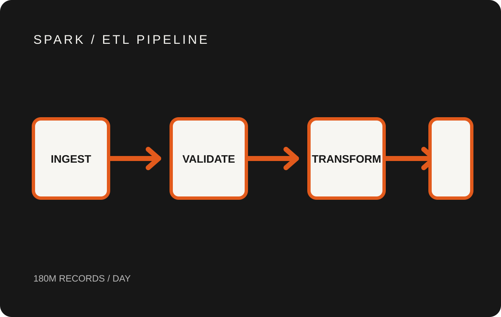
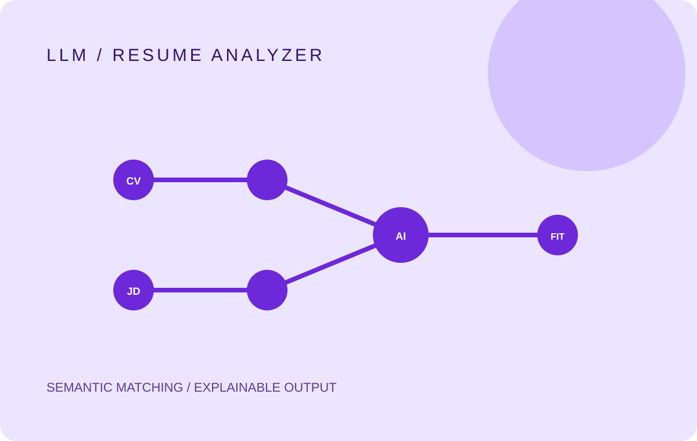

Robin Singh Senior Data Engineer building reliable systems.
I build lakehouses, streaming pipelines and AI-powered tools that turn complex data into clear, dependable decisions.
Core stack.
- Python
- SQL
- Data modeling
- Microsoft Fabric
- Azure
- Databricks
- Apache Spark
- Delta Lake
- Eventstream
- Azure Data Factory
- Power BI
- LLM applications
Selected case studies.
-

Fabric Eventstream Real-time streaming A near-real-time IoT pipeline in Microsoft Fabric that streams sensor telemetry into live Power BI monitoring for operations teams. <5s latency99.2% uptime3x faster alerts -

Azure Data Lake Lakehouse architecture Rebuilt a fragmented reporting stack into a governed lakehouse with clear medallion layers, fewer incidents and fresher dashboards. −42% failures−31% compute2.4x onboarding -

Spark ETL Pipeline High-volume batch Re-engineered slow, brittle transaction jobs into deterministic, recoverable Spark pipelines with stronger observability under peak load. −38% runtime−27% spend99.3% success -

LLM Resume Analyzer Applied AI Scores candidate fit against role requirements and explains the score in plain language, for faster recruiter triage and clearer feedback. −52% screening time+28% precision4.6/5 rating
Kind words.
Recommendations from people I've built data platforms with, taken from LinkedIn.
-
“I've worked with Robin on several data projects and he's been a reliable teammate throughout. His knowledge of Microsoft Fabric and cloud architecture is genuinely strong, he understands the why behind decisions, on Power BI side, he has a good eye for optimization and delivers clean, well-performing reports. Solid engineer, easy to work with. Highly recommend.”
-
“I had the pleasure of working closely with Robin for 1.5+ years and highly recommend him. He is an exceptional data analyst proficient in SQL and Python, turning complex data into actionable insights. Robin excels in teamwork, consistently contributing valuable ideas. His strong time management, problem-solving, and decision-making skills make him an asset to any project. A positive and collaborative team member, I confidently recommend Robin for roles in data analytics.”